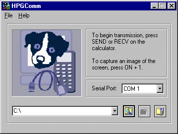

In order to use this program you need:When you run this program and tell it which serial port your calculator is connected to, it then 'watches' for any activity by the calculator.
You use HPGComm to:
Pressing SEND or RECV in any of the views with communication capabilities (Aplet Library, List, Matrix, Program and Notepad) will cause HPGComm to cooperate in the transfer to and/or from the PC. This process is almost entirely controlled from the calculator, with the only real choice at the PC level being which directory to transfer to or from, and which serial port to use.